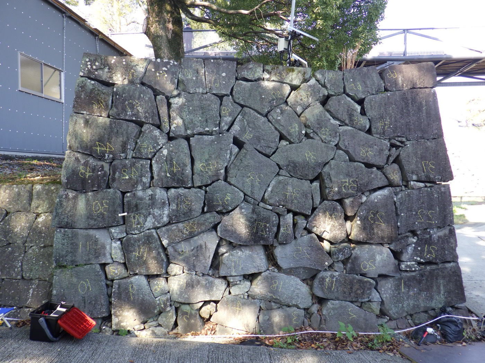
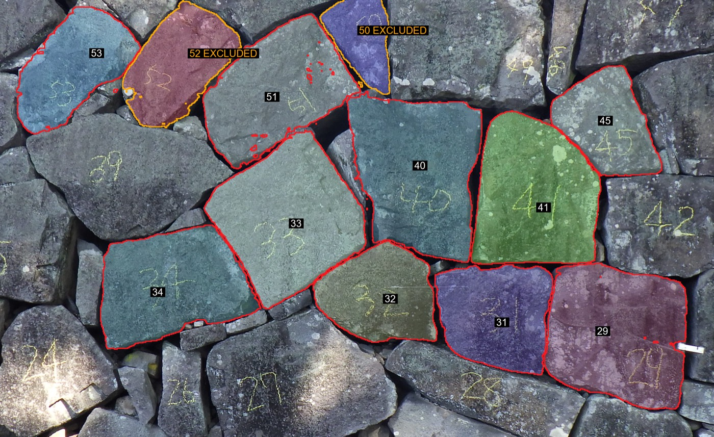

熊本城石垣の安定性評価における機械学習を用いた省力化
Streamlining the Stability Assessment of Kumamoto Castle’s Stone Walls Using Machine Learning
担当：出永 貴之
キーワード：
機械学習／画像セグメンテーション／SAM（Segment Anything Model）／LiDAR（3次元点群）／石垣の安定性評価／文化財保全
はじめに
熊本城の石垣は，歴史的な建造物です．石垣を安全に保存・管理するためには，石垣を構成する一つひとつの石の状態を適切に把握することが重要です．現在，その把握には，石をたたいて状態を調べる現地での打撃試験や，計測・解析が必要で，多くの作業負担がかかります．
もし AI と3次元計測データで石の安定性を評価できれば，こうした作業負担を減らし，石垣の点検や維持管理を効率化できます．文化財の長期的な保全への貢献も期待されます．
石垣の画像の解析：インスタンスセグメンテーションと回帰
本研究では，AI に2つの処理を行わせます．1つ目は，画像中の石を1個ずつ識別・抽出するインスタンスセグメンテーション（Instance Segmentation）です．画像の中の「石」の部分をまとめて見つけるだけでなく，石を1個ずつ区別して切り出します．この処理には，画像の中のさまざまな物体を切り出せる画像認識 AI SAM（Segment Anything Model）を用います．
2つ目は，数値を予測する回帰（Regression）です．石の形の特徴から，安定性に関する指標を推定します．石の形は，レーザーを当てて物の形を3次元の点の集まり（3次元点群）として計測する LiDAR で調べます．

研究内容
本研究では，AI と3次元計測データを用いて石垣の安定性に関する指標を推定し，現地調査・評価作業の省力化を実現することを目的としています．本研究は，大きく4つの段階で行います．
- 計測：熊本城の石垣を，写真と LiDAR（レーザー計測）で計測します．
- 石の抽出：画像認識 AI「SAM」を用いて，写真に写る石を1個ずつ抽出します．
- 特徴の数値化：抽出した石と3次元点群を対応付けます．そして，石の大きさ・傾き・張り出し量などの特徴を数値にします．
- 安定性の推定：石の形の特徴と，打撃試験による計測結果を機械学習に利用し，安定性に関する指標の推定を目指します．

参考文献
- A. Dreier, A. Tobies, H. Kuhlmann, and L. Klingbeil, “Stone instance segmentation of rubble masonry based on laser scanning point clouds,” Measurement, vol. 242, 115905, 2025.
- A. Kirillov et al., “Segment Anything,” Proceedings of the IEEE/CVF International Conference on Computer Vision (ICCV), pp. 4015–4026, 2023.
- N. Ravi et al., “SAM 2: Segment Anything in Images and Videos,” International Conference on Learning Representations (ICLR), 2025.